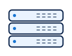
Rack server
compute/rack-servercompute · server

324 editable SVG assets in 20 categories. Original generic symbols with stable IDs, searchable roles, normalized connection anchors and 24 source-controlled diagram templates.

compute/rack-servercompute · server
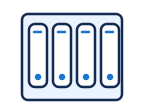
compute/blade-servercompute · blade
compute/server-rackcompute · rack
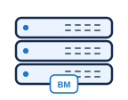
compute/baremetalcompute · server
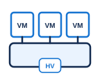
compute/hypervisorcompute · hypervisor
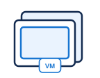
compute/virtual-machinecompute · vm
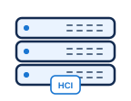
compute/hci-nodecompute · server
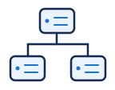
compute/compute-clustercompute · cluster
compute/workstationcompute · desktop
compute/laptopcompute · laptop
compute/mobilecompute · mobile
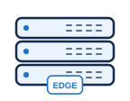
compute/edge-servercompute · server
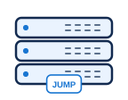
compute/bastion-hostcompute · server
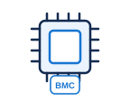
compute/management-controllercompute · chip
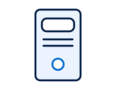
compute/tower-servercompute · tower
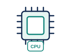
hardware/cpuhardware · chip
hardware/gpuhardware · accelerator
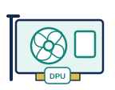
hardware/dpuhardware · accelerator
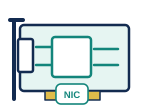
hardware/nichardware · nic
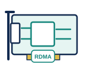
hardware/rdma-nichardware · nic
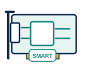
hardware/smartnichardware · nic
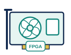
hardware/fpgahardware · accelerator
hardware/video-acceleratorhardware · accelerator
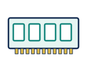
hardware/memoryhardware · memory
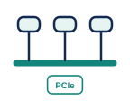
hardware/pciehardware · bus
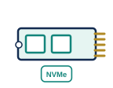
hardware/nvme-devicehardware · ssd
hardware/hsm-devicehardware · chip
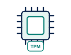
hardware/tpmhardware · chip
hardware/optical-transceiverhardware · transceiver
network/switch-l2network · switch
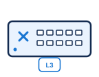
network/switch-l3network · switch
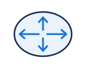
network/routernetwork · router
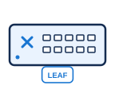
network/leaf-switchnetwork · switch
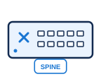
network/spine-switchnetwork · switch
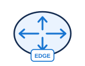
network/border-routernetwork · router
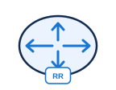
network/route-reflectornetwork · router
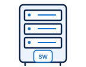
network/chassis-switchnetwork · rack
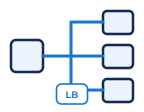
network/load-balancernetwork · balance
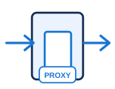
network/reverse-proxynetwork · gateway
network/api-gatewaynetwork · gateway
network/vpn-gatewaynetwork · gateway
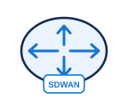
network/sdwan-edgenetwork · router
network/wireless-apnetwork · wifi
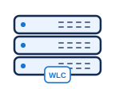
network/wireless-controllernetwork · server
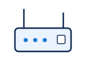
network/modemnetwork · modem
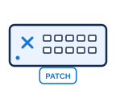
network/patch-panelnetwork · switch
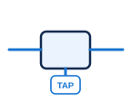
network/network-tapnetwork · tap
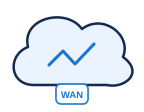
network/wan-providernetwork · cloud
network/internetnetwork · globe
routing/ecmprouting · multipath
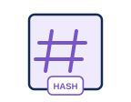
routing/flow-hashrouting · hash
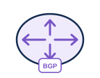
routing/bgprouting · router
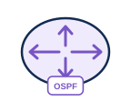
routing/ospfrouting · router
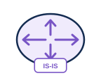
routing/isisrouting · router
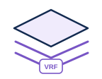
routing/vrfrouting · layers
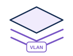
routing/vlanrouting · layers
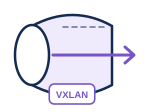
routing/vxlanrouting · tunnel
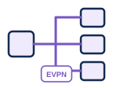
routing/evpnrouting · multipath
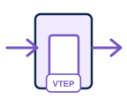
routing/vteprouting · gateway
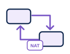
routing/natrouting · translate
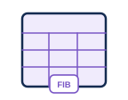
routing/route-tablerouting · table
routing/qosrouting · queue
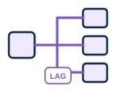
routing/lagrouting · multipath
routing/mplsrouting · tunnel
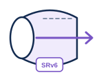
routing/srv6routing · tunnel
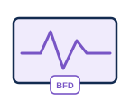
routing/bfdrouting · pulse
routing/rpkirouting · certificate
routing/peeringrouting · peering
security/firewallsecurity · firewall
security/wafsecurity · firewall
security/idssecurity · eye
security/ipssecurity · shield
security/security-gatewaysecurity · gateway
security/aclsecurity · checklist
security/security-groupsecurity · shield
security/nacsecurity · shield
security/microsegmentationsecurity · segments
security/ddos-protectionsecurity · shield
security/sandboxsecurity · box
security/honeypotsecurity · trap
security/siemsecurity · dashboard
security/soarsecurity · workflow
security/edrsecurity · desktop
security/vulnerability-scannersecurity · scan
security/dlpsecurity · shield
security/casbsecurity · cloud
security/zero-trustsecurity · shield
security/policy-enginesecurity · decision
security/secure-bootsecurity · chip
security/quarantinesecurity · segments
security/threat-actorsecurity · person
security/security-reviewsecurity · checklist
identity/useridentity · person
identity/adminidentity · person
identity/groupidentity · users
identity/service-accountidentity · person
identity/identity-provideridentity · identity
identity/mfaidentity · mobile
identity/passkeyidentity · key
identity/certificateidentity · certificate
identity/certificate-authorityidentity · certificate
identity/keyidentity · key
identity/secrets-vaultidentity · vault
identity/access-tokenidentity · token
identity/federationidentity · peering
identity/privileged-accessidentity · vault
storage/diskstorage · disk
storage/storage-arraystorage · array
storage/nasstorage · array
storage/sanstorage · array
storage/object-storestorage · bucket
storage/file-sharestorage · folder
storage/block-volumestorage · disk
storage/distributed-storagestorage · cluster
storage/snapshotstorage · layers
storage/backupstorage · backup
storage/immutable-backupstorage · vault
storage/tape-librarystorage · tape
storage/disk-raidstorage · array
cloud/public-cloudcloud · cloud
cloud/private-cloudcloud · cloud
cloud/hybrid-cloudcloud · peering
cloud/cloud-regioncloud · globe
cloud/availability-zonecloud · building
cloud/datacentercloud · building
cloud/branch-officecloud · building
cloud/vpccloud · cloud
cloud/subnetcloud · segments
cloud/cloud-peeringcloud · peering
cloud/dedicated-circuitcloud · multipath
cloud/saascloud · browser
cloud/edge-locationcloud · globe
cloud/cloud-functioncloud · function
kubernetes/clusterkubernetes · cluster
kubernetes/control-planekubernetes · cluster
kubernetes/worker-nodekubernetes · server
kubernetes/podkubernetes · hexagon
kubernetes/containerkubernetes · box
kubernetes/servicekubernetes · balance
kubernetes/ingresskubernetes · gateway
kubernetes/gateway-apikubernetes · gateway
kubernetes/namespacekubernetes · segments
kubernetes/deploymentkubernetes · layers
kubernetes/statefulsetkubernetes · layers
kubernetes/daemonsetkubernetes · cluster
kubernetes/jobkubernetes · task
kubernetes/cronjobkubernetes · clock
kubernetes/configmapkubernetes · document
kubernetes/secretkubernetes · vault
kubernetes/persistent-volumekubernetes · disk
kubernetes/helm-chartkubernetes · package
kubernetes/operatorkubernetes · gear
kubernetes/cnikubernetes · multipath
kubernetes/csikubernetes · disk
software/browsersoftware · browser
software/frontendsoftware · browser
software/backendsoftware · code
software/rest-apisoftware · code
software/grpc-apisoftware · code
software/microservicesoftware · hexagon
software/functionsoftware · function
software/background-workersoftware · gear
software/message-queuesoftware · queue
software/message-brokersoftware · multipath
software/event-bussoftware · bus
software/topicsoftware · broadcast
software/schedulersoftware · clock
software/batch-jobsoftware · task
software/websocketsoftware · peering
software/webhooksoftware · hook
software/external-servicesoftware · cloud
software/monolithsoftware · code
software/workflowsoftware · workflow
data/relational-dbdata · database
data/document-dbdata · database
data/key-value-dbdata · database
data/graph-dbdata · graph
data/vector-dbdata · database
data/time-series-dbdata · database
data/cachedata · memory
data/data-warehousedata · building
data/data-lakedata · bucket
data/stream-processordata · workflow
data/etldata · translate
data/datasetdata · table
data/database-replicadata · database
data/search-indexdata · search
devops/source-codedevops · code
devops/git-repositorydevops · git
devops/branchdevops · git
devops/pull-requestdevops · git
devops/code-reviewdevops · checklist
devops/ci-builddevops · gear
devops/cd-releasedevops · package
devops/artifact-registrydevops · array
devops/container-imagedevops · package
devops/unit-testsdevops · checklist
devops/integration-testsdevops · checklist
devops/end-to-end-testsdevops · checklist
devops/infrastructure-as-codedevops · code
devops/policy-as-codedevops · code
devops/sbomdevops · document
devops/sastdevops · scan
devops/scadevops · scan
devops/dastdevops · scan
devops/release-approvaldevops · checklist
devops/rollbackdevops · retry
observability/metricsobservability · chart
observability/logsobservability · document
observability/tracesobservability · trace
observability/dashboardobservability · dashboard
observability/alertobservability · bell
observability/health-probeobservability · pulse
observability/collectorobservability · multipath
observability/netflowobservability · trace
observability/packet-captureobservability · packet
observability/audit-logobservability · document
observability/incidentobservability · bell
observability/service-mapobservability · graph
ai/llmai · brain
ai/vision-modelai · eye
ai/embedding-modelai · matrix
ai/rerankerai · sort
ai/model-serverai · server
ai/model-registryai · array
ai/ai-agentai · agent
ai/mcp-serverai · gateway
ai/mcp-clientai · code
ai/toolai · gear
ai/guardrailai · shield
ai/human-approvalai · person
ai/promptai · document
ai/context-windowai · memory
ai/kv-cacheai · memory
ai/prefill-workerai · accelerator
ai/decode-workerai · accelerator
ai/training-jobai · brain
ai/rag-retrieverai · search
ai/routerai · decision
resilience/replicationresilience · peering
resilience/failoverresilience · multipath
resilience/active-activeresilience · peering
resilience/active-passiveresilience · peering
resilience/disaster-recoveryresilience · backup
resilience/circuit-breakerresilience · breaker
resilience/retryresilience · retry
resilience/rate-limiterresilience · gauge
resilience/autoscalerresilience · balance
resilience/timeoutresilience · clock
protocol/packetprotocol · packet
protocol/ethernet-frameprotocol · packet
protocol/ip-packetprotocol · packet
protocol/tcp-segmentprotocol · packet
protocol/udp-datagramprotocol · packet
protocol/rdma-operationprotocol · nic
protocol/queue-pairprotocol · queue
protocol/sequence-numberprotocol · token
protocol/ackprotocol · packet
protocol/sackprotocol · bitmap
protocol/nackprotocol · packet
protocol/receive-windowprotocol · memory
protocol/memory-bufferprotocol · memory
protocol/queue-bufferprotocol · queue
protocol/dropped-packetprotocol · drop
protocol/out-of-orderprotocol · sort
protocol/congestionprotocol · gauge
protocol/ecnprotocol · packet
protocol/pfc-pauseprotocol · pause
protocol/rttprotocol · clock
protocol/retransmissionprotocol · retry
presentation/boundarypresentation · boundary
presentation/panelpresentation · panel
presentation/swimlanepresentation · lanes
presentation/calloutpresentation · note
presentation/notepresentation · document
presentation/steppresentation · token
presentation/decisionpresentation · decision
presentation/processpresentation · process
presentation/external-entitypresentation · process
presentation/data-storepresentation · datastore
presentation/start-endpresentation · capsule
presentation/legendpresentation · legend
presentation/connector-junctionpresentation · junction
presentation/link-breakpresentation · breaker
presentation/fan-outpresentation · multipath
presentation/fan-inpresentation · funnel
presentation/sequence-lifelinepresentation · lifeline
presentation/annotation-bracketpresentation · bracket
presentation/physical-linkpresentation · link
presentation/tunnelpresentation · tunnel
status/healthystatus · check
status/warningstatus · warning
status/downstatus · cross
status/pendingstatus · clock
status/blockedstatus · blocked
status/lockedstatus · lock
status/unlockedstatus · unlock
status/unknownstatus · question
status/approvedstatus · check
status/expiredstatus · clock
business/formbusiness · form
business/invoicebusiness · invoice
business/purchase-orderbusiness · form
business/contractbusiness · signature
business/emailbusiness · envelope
business/calendarbusiness · calendar
business/ticketbusiness · ticket
business/approvalbusiness · stamp
business/rejectionbusiness · stamp-x
business/gateway-parallelbusiness · parallel
business/timerbusiness · timer
business/paymentbusiness · card
business/reportbusiness · chart
business/vendorbusiness · building
business/chatbusiness · bubble
fleet/vehiclefleet · truck
fleet/dashcamfleet · camera
fleet/telematics-unitfleet · chip
fleet/gps-fixfleet · pin
fleet/geofencefleet · geofence
fleet/event-clipfleet · film
fleet/dispatcherfleet · headset
fleet/coaching-sessionfleet · users
fleet/maintenance-bayfleet · garage
Edit the scene JSON, validate it, then render the SVG. Click a preview for the vector output. Examples are illustrative and do not assert real product compatibility or an operational deployment.